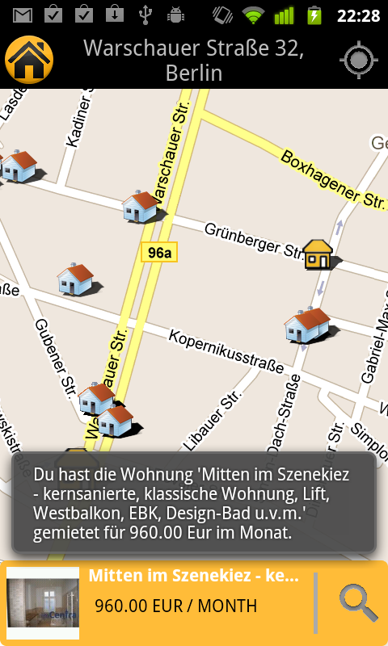
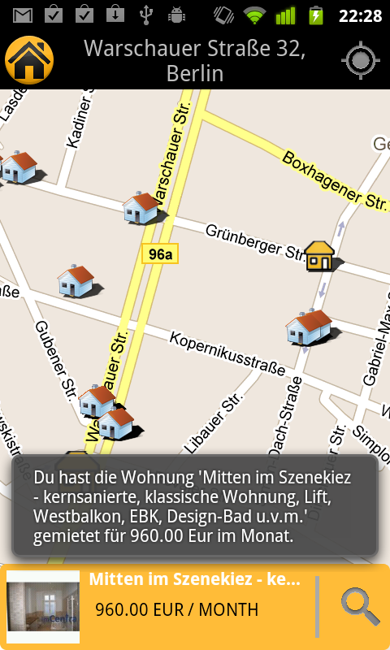

Kurzinfo & Download
Immopoly verwendet die neue Immobilienscout24 Schnittstelle. Es wurde im Rahmen des Android™ dev Contest von Tobias Sasse und Mister Schtief entwickelt und eingereicht. Eine beta version gibt es für Android. Neuigkeiten erfahrt ihr im Blog. Ihr könnt euch gerne an der OpenSource Entwicklung beteiligen und eure Bugs, Wünsche und Ideen eintragen.
nach obenDie Top 5 Makler
| Rank | Name | Balance |
|---|
Die letzten Aktionen im Spiel (Gesamthistorie)
| Name | Date | Event |
|---|
Wie funktioniert immopoly?
 



Mehrwert & Ausblick
- ständige Erkundung des Wohnungsmarktes auf spielerische Art und Weise mit Immoscout.
- Immobilenscout24 erhält so indirekt ein Beliebtheitsranking der Immobilien sowie der Regionen
- Interaktionen mit den Immobilien könnten über soziale Netzwerke verteilt & dadurch beworben werden
- Erweiterung des Spiels um weitere Einnahmequellen z.B. durch Reisen oder bewerben von Immobilien
- Interaktion mit den anderen Spielern durch freundliche bzw. feindliche Übernahme der Immobilien
- Es wäre möglich das Portfolio der Spieler als Merkliste im Immoscout Portal zu führen
Welche Technik steckt hinter immopoly?
Immopoly besteht aus zwei Komponenten Immopoly Android Application: Die Immopoly Android ermöglich das Suchen von Immobilien im Umkreis des Spielers. Dazu wird die neue Immobilienscout24 REST-API verwendet. Informationen zu einer Ausgewählten Immobilie kann über die mobile Webseite von Immobilienscout24 bezogen werden. Immopoly Webservice Der Immopoly Webservice verwaltet die Benutzer, Portfolio und Historiendaten Jede Nacht kontrolliert der Service mittels der neuen Immobilienscout24 REST-API, ob eine Immobilie noch im Immocscout24 Datenbestand enthalten ist. Ist dies nicht der Fall gilt sie im Spiel als vermietet und der Makler erhält die Kaution. Beide Komponenten kommunizieren über die ebenfalls REST basierte Immopoly API
nach oben